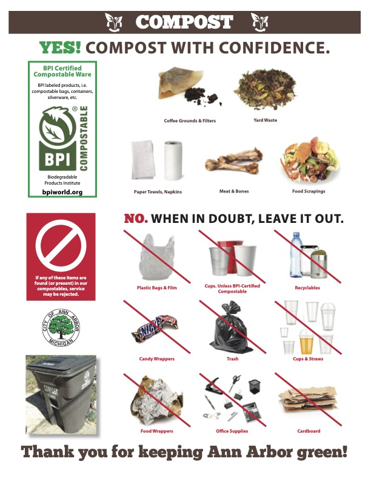

How Composting in Ann Arbor Works
Ann Arbor offers single-family residential properties with one free 64- or 96-gallon compost cart. Pick up is free or one can be delivered for $59, and additional carts are available for a fee. To order a cart and arrange for pick up or delivery, please contact the customer service center at 734.994.7336 or via customerservice@a2gov.org.

Step by Step Guide for Composting at Home
- Step 1: Contact customerservice@a2gov.org or 734.994.7336 to get your free compost cart
- Step 2: Keep a small composting bucket in your kitchen to collect food scraps. If you don't want to clean your bin regularly, then line the bucket with a compostable bag. The bag can easily be tied closed and disposed of in your compost cart and it will break down just as well as the goods inside!
- Step 3: Place your Food scraps, yard trimmings, even newspapers or paper towels into your home compost bin!
- Step 4: When the time comes, take your compost bin to the curb to be collected by your local compost heroes
- Step 5: On collection days, your local compost collectors take your compost to the local composting facility
- Step 6: Here in Ann Arbor We Care Denali collects, processes and screens your compost for any pesky contaminates and then start the compost process
- Step 7: After time of mixing and watering which keeps the decomposition process moving, your compostable inputs leave the facility as nutrient rich soil and mulch!
- Step 8: Soils and mulches are used for farming to grow some hearty crops
- Step 9: These crops are turned into healthy food products which can be consumed or even used to make more compostable products!